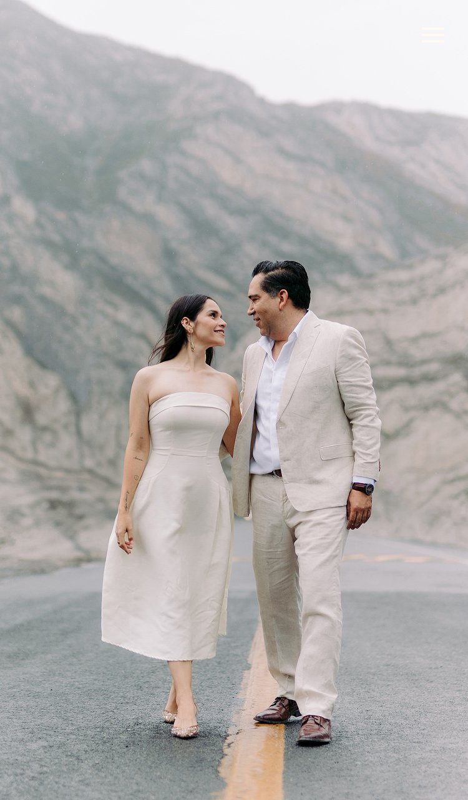
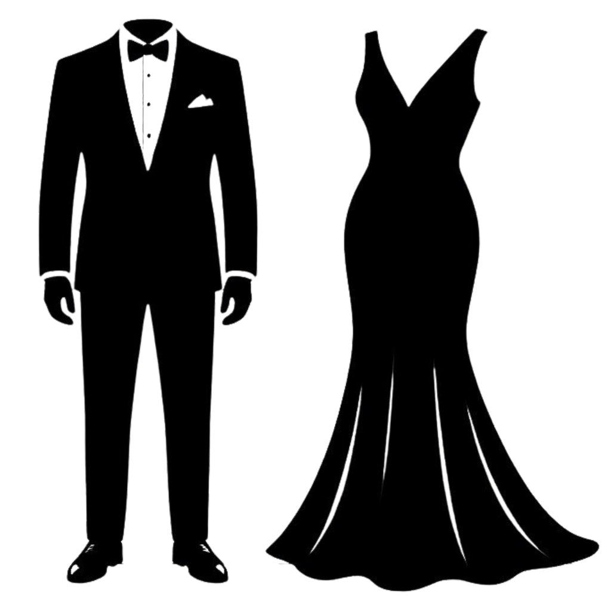
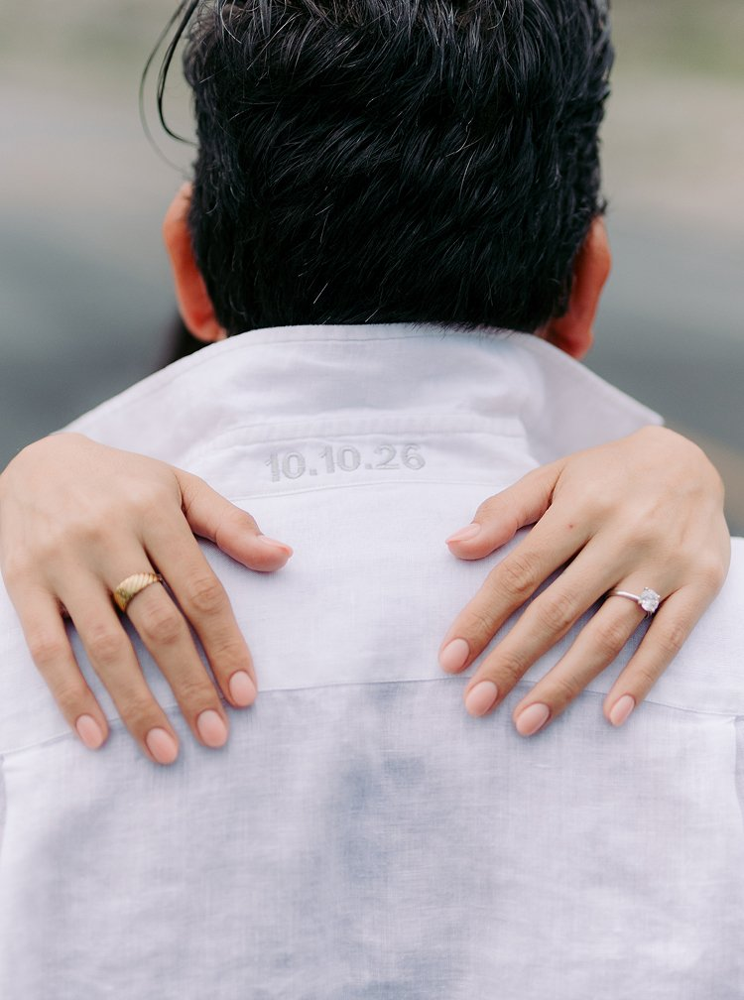

10 de Octubre 2026
10 de Octubre 2026

Con la guía de Dios y el profundo amor que nos une:
Tenemos el honor de invitarlos a celebrar nuestra unión, que se llevará a cabo el día
Black Tie · Etiqueta
Esmoquin o traje en tonos oscuros
Moño o corbata
Zapatos formales charol o piel

Vestido de noche largo evitar blanco y tonos crema
Bolso tipo clutch o cartera
Zapatos de tacón

- Solo adultos -
Nuestro mejor regalo es su presencia y buenos deseos.
En caso de que deseen
hacernos un obsequio, dejamos las siguientes opciones
Efectivo en sobre
el día del evento
Mesa de regalos
Ver mesa